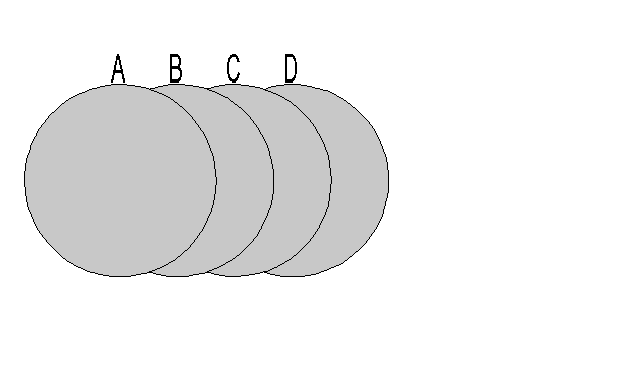

| Source image | Reference image |
|---|---|
 |
| Initiate Test | Purpose | Test Result | Comments |
| Execution of Step 1 must be pending. | NA | No action should happen at this point. The execution of a step will always happen when clicking on the next step. I.e., step 1 will be executed upon clicking on step 2, step 2 will be executed upon clicking on step 3, etc. | |
| Execute Step 1: Highlight Circle B. | NA | Passed if B is highlighted. | |
| Execute Step 2: Highlight Circle C. | NA | Passed if B, C and D are highlighted. | |
| Execute Step 3: Clear highlights. | NA | Passed if highlight is removed. | |
| Execute Step 4: Highlight Circle A and B. | NA | Passed if A and B are highlighted. | |
| Execute Step 5: Highlight circle C and D using new highlight. | NA | Passed if C and D are highlighted. |